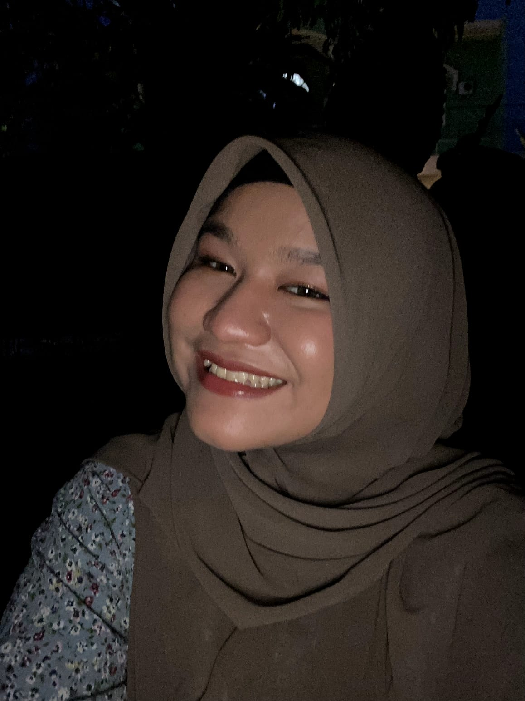
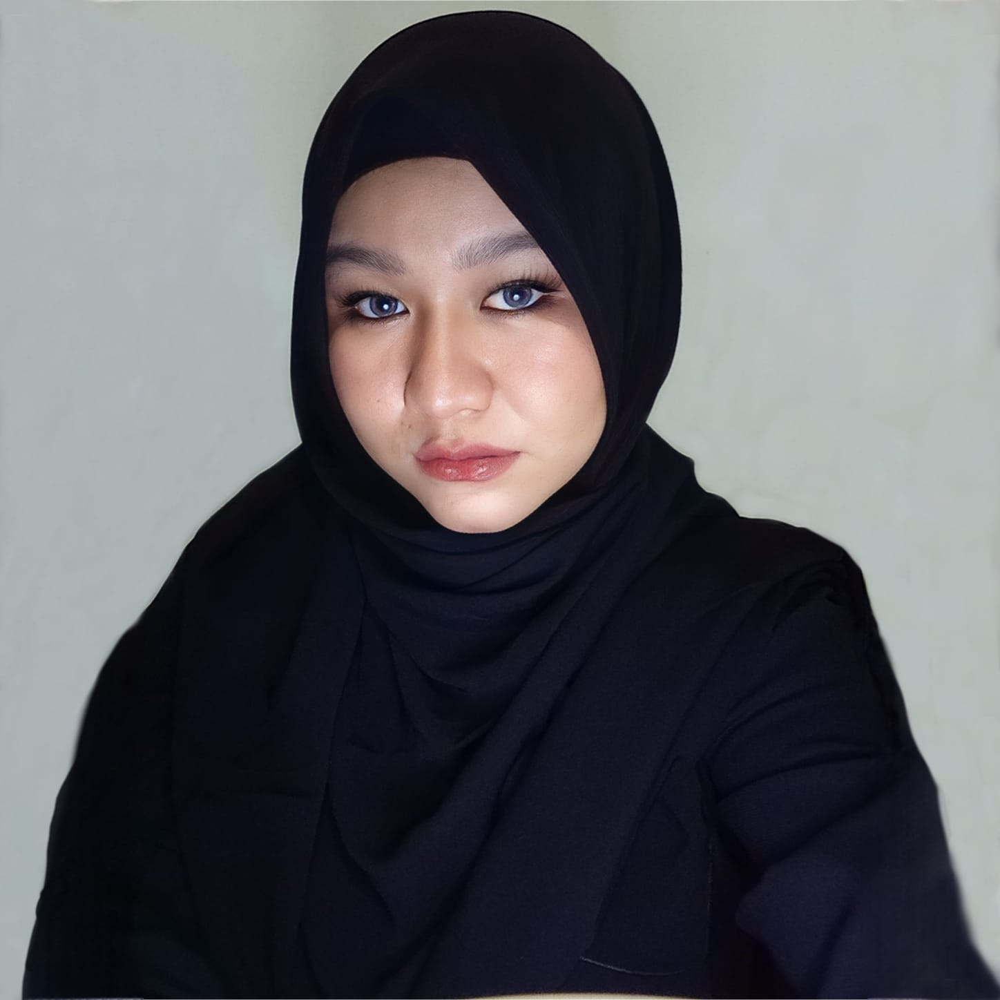

Foto pertama kita bersama
Foto saat kita piknik di taman
Foto saat kita menonton film favorit kita
Foto saat kita bermain di pantai

Foto saat kita makan malam romantis
Foto saat kita berpelukan di sofa
Foto saat kita berciuman di bawah pohon
Foto saat kita berjalan-jalan di kota
Foto saat kita bermain salju
Foto saat kita mengunjungi museum
Foto saat kita bermain gitar bersama
Foto saat kita menari di pesta
Foto saat kita berlibur di Bali
Foto saat kita bermain api unggun
Foto terakhir kita bersama
❮
❯
"Cinta adalah perasaan yang tidak bisa dijelaskan, hanya bisa dirasakan." - Anonim
"Cinta adalah ketika kamu mengambil segalanya dari seseorang, tapi dia tetap mencintaimu." - Bob Marley
"Cinta adalah ketika kamu menemukan seseorang yang membuatmu merasa lengkap." - Tom Cruise
"Cinta adalah ketika kamu tidak bisa hidup tanpa seseorang." - Celine Dion
"Cinta adalah ketika kamu rela berkorban untuk kebahagiaan seseorang." - Mother Teresa
Aku mencintaimu, kamu mencintaiku juga?